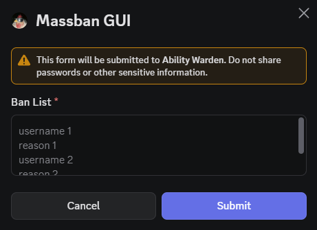

Mass Ban
Opens a modal which allows you to ban multiple users at once. In the modal's textbox, information about each ban can be provided. One line contains the username of the user to ban, and the line after it must contain the reason for the ban.
Odd lines are usernames, even lines are reasons. The number of bans that can be applied at once is limited to 50.

Usage
/aw-massban
09 March 2026